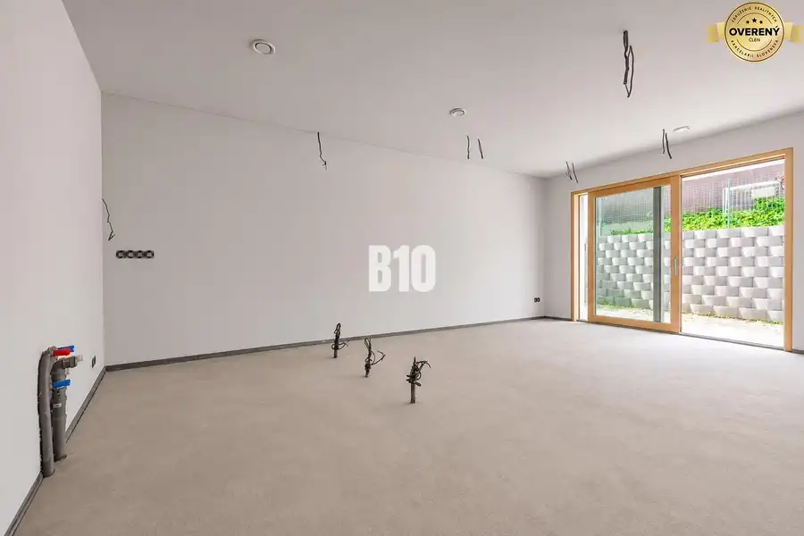
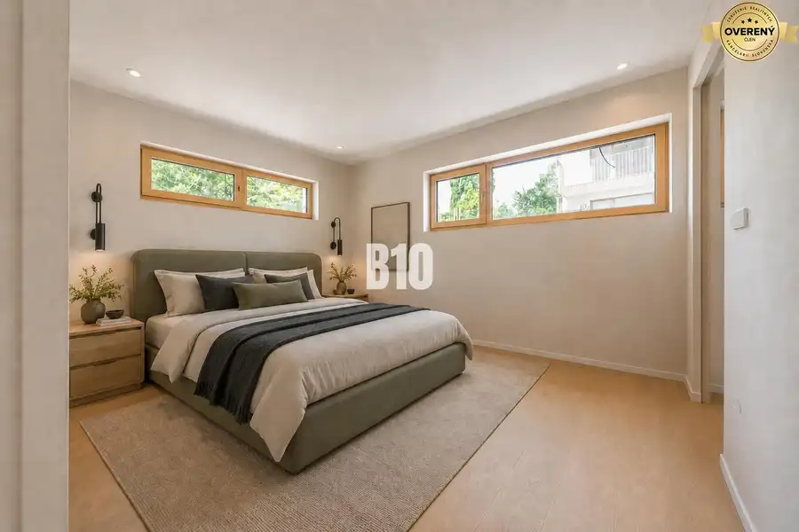
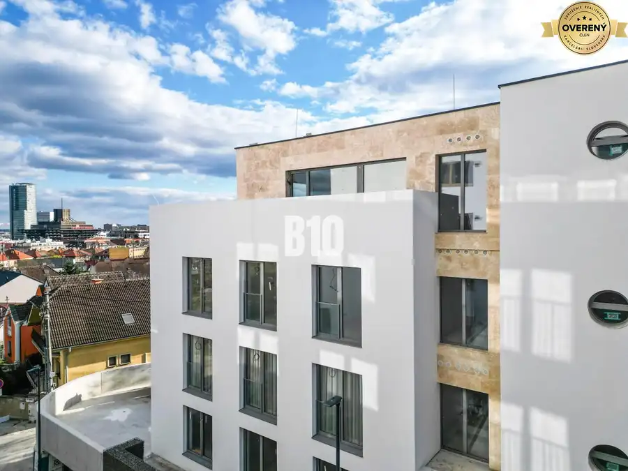
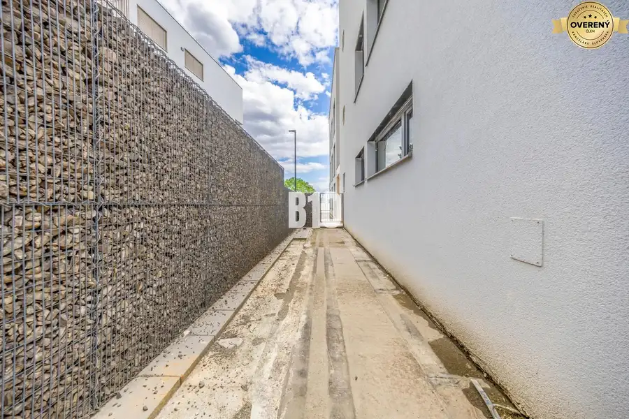

SKOLAUDOVANÉ | POD VINICAMI - POSLEDNÝ VOĽNÝ 2IZBOVÝ APARTMÁN S PREDZÁ
Bratislava





- Dispozícia2-izbový
- Plocha53 m²
- Poschodie0.
- Vlastníctvoosobné
O nehnuteľnosti
B10 Vám ponúka na predaj nadštandardný 2-izbový apartmán s predzáhradkou, ktorý sa nachádza na začiatku bratislavskej Koliby v SKOLAUDOVANEJ boutique rezidencii POD VINICAMI.Komorný projekt s iba 15 bytmi spája precíznu architektúru, moderné technológie a pokojné bývanie v bezprostrednom kontakte s prírodou. Je určený pre klientov, ktorí hľadajú vysoký štandard, dostatok súkromia a rýchlu dostupnosť centra Bratislavy..POPIS apartmánu:Apartmán č. 03 ponúka podlahovú plochu 52,5m2, ktorú dopĺňa súkromná predzáhradka s výmerou cca 50m2. Tá vytvára príjemné pokračovanie obytného priestoru.Veľkým benefitom je jeho technologické vybavenie. O celoročný tepelný komfort sa postará podlahové vykurovanie spolu so stropným chladením cez teplené čerpadlá.Ovládateľná rekuperácia zabezpečí pravidelný prísun čerstvého vzduchu bez potreby neustáleho vetrania.Súčasťou prevedenia sú veľkoformátové drevohliníkové okná INTERNORM s izolačným trojsklom a akustickým útlmom, bezpečnostné vstupné dvere, programovateľné osvetlenie a predpríprava na elektricky ovládané exteriérové žalúzie.Projekt je navrhnutý v energetickej triede A1 a počíta aj s prípravou na využitie fotovoltických panelov..PROJEKT:Rezidencia POD VINICAMI pozostáva iba z 15 bytov, vďaka čomu si zachováva komornú atmosféru a svojim obyvateľom poskytne vyššiu mieru pokoja a súkromia.Moderná architektúra, kvalitné materiály a technologické riešenia vytvárajú bývanie, ktoré spĺňa požiadavky aj náročnejšieho klienta. Jednou z najväčších predností projektu je jeho poloha – medzi mestom a prírodou, bez nutnosti robiť kompromisy medzi dostupnosťou a pokojom.K bytu je možné dokúpiť parkovacie miesto v podzemnej garáži v hodnote 30.000€..LOKALITA:Začiatok Koliby patrí medzi najžiadanejšie rezidenčné lokality Bratislavy. Ponúka príjemné prostredie pod Malými Karpatmi, množstvo zelene a zároveň rýchle spojenie s centrom mesta.Cyklotrasy a turistické chodníky sa nachádzajú prakticky priamo za plotom projektu, čo ocenia milovníci behu, cyklistiky aj prechádzok v prírode. V okolí je dostupná kompletná občianska vybavenosť vrátane obchodov, škôl, reštaurácií a služieb..ODPORÚČANIE MAKLÉRA:Apartmán odporúčam klientovi, ktorý hľadá nadštandardné bývanie v komornom projekte a nechce si vyberať medzi mestom a prírodou. Súkromná predzáhradka, moderné technológie, energetická efektívnosť a lokalita na začiatku Koliby vytvárajú kombináciu vhodnú na komfortné vlastné bývanie aj dlhodobú investíciu.V prípade záujmu o obhliadku alebo bližšie informácie nás neváhajte kontaktovať na tel.č. ID: 132860Cena: 279 000€ Aj váš dom, byt alebo pozemok predáme na počkanie #pocelomslovensku
Parametre
- Rozloha pozemku
- 500 m²
- Zastavaná plocha
- 500 m²
- Úžitková plocha
- 53 m²
- Poschodie
- prízemie
- Vlastníctvo
- osobné
- Status
- aktívne
- Novostavba
- áno
- Dátum zverejnenia
- 2026-07-28
Kde to je
Mohlo by Vás zaujímať
 BytNové
459 900 €POTENCIÁL NA GRÖSSLINGOVEJ - 4IZBOVÝ BYT PODĽA VAŠICH PREDSTÁV
Staré Mesto
4-izbový112 m²
BytNové
459 900 €POTENCIÁL NA GRÖSSLINGOVEJ - 4IZBOVÝ BYT PODĽA VAŠICH PREDSTÁV
Staré Mesto
4-izbový112 m²
 BytNové
399 000 €SKOLAUDOVANÉ | POD VINICAMI - POSLEDNÉ VOĽNÉ 3IZBOVÉ BYTY S PREDZÁHRAD
Bratislava
3-izbový132 m²
BytNové
399 000 €SKOLAUDOVANÉ | POD VINICAMI - POSLEDNÉ VOĽNÉ 3IZBOVÉ BYTY S PREDZÁHRAD
Bratislava
3-izbový132 m²
 BytNové
599 900 €TAKMER 200m² NAD MESTOM - JEDINEČNÝ 4-IZBOVÝ BYT S VEĽKOLEPOU TERASOU
Staré Mesto
4-izbový198 m²
BytNové
599 900 €TAKMER 200m² NAD MESTOM - JEDINEČNÝ 4-IZBOVÝ BYT S VEĽKOLEPOU TERASOU
Staré Mesto
4-izbový198 m²